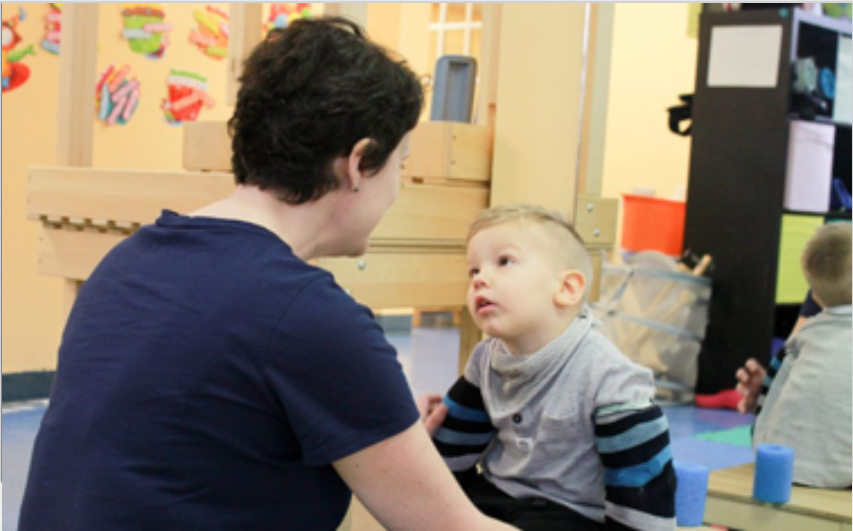
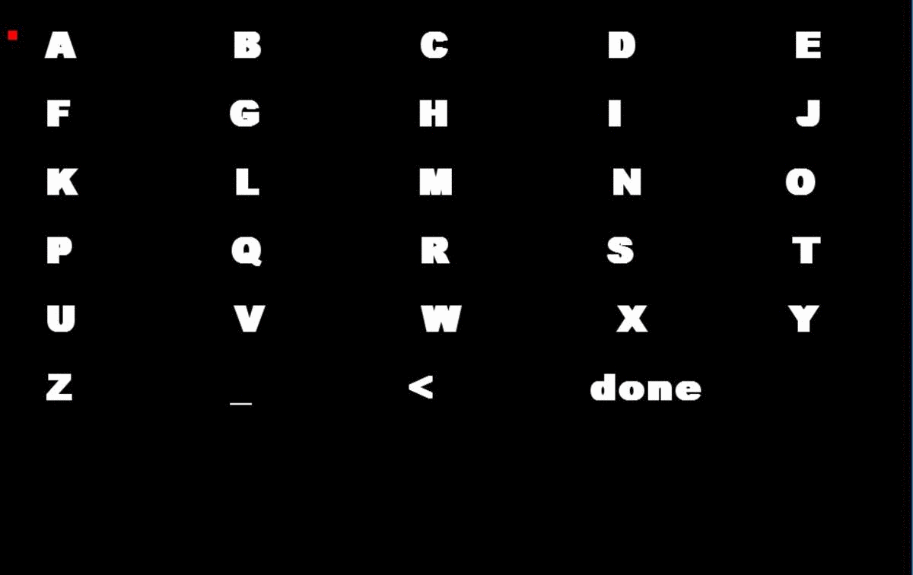

Right now, there are quite a lot of people out there with neurological disabilities are left with poor motor function and the inability to communicate at a normal standard.
As a result, these people can’t type, speak, or write to express themselves. To help tackle this issue, I created software that measures your brainwaves and uses them to speak what you want out loud.

Student from CE Academy
This project is a great proof of concept about how we can use our brains to control technology. In this program, the user uses their brains to type on a computer and then say what they want out loud.
How it Works
Step 1: Data Retrieval
The software is controlled using EEG technology. Its powered by the Muse headband, which is an EEG device. EEG (electroencephalography) measures the change in the electric field your brain produces when groups of electrons fire at once. The data from the Muse headband is recorded, transmitted to the computer, analyzed, and then used.
Step 2: Controlling the Keyboard
For the user to say what they want, they first need to type out their desired letter. The software uses a matrix of letters to help the user choose a letter. It starts off by having a cursor iterate from row to row, so the user can select the row their letter is in. Then the cursor iterates through the selected row so that the user can select the right letter. When they have done so, the letter is added to their phrase and they are taken back to the top left of the table.

Letter Matrix User Interface
The user uses 2 inputs: jaw clenches and blinks. Jaw clenches are used as the “select” action — selecting rows and letters. When the user double blinks, they are taken back to the top of the table. This in case they choose the wrong row. They can select any letter, the underscore to type a space, or the left angle bracket to delete a character.
Step 3: Speech
After the user is done typing out their phrase, they can select “done” to use their phrase. Now, anytime they clench their jaw, the computer speaks their phrase out loud allowing them to speak on command.
· · ·
While this project is a mere prototype, it has a lot of potential. In the future I hope to increase typing speed, allow the user to save certain phrases they use often, and also include word predictions that adapt to them like apple’s keyboard.
This project takes a great step forward to allowing disabled people to communicate independently with other people. They can now interact with people and technology at a new level, significantly increasing their quality of life.